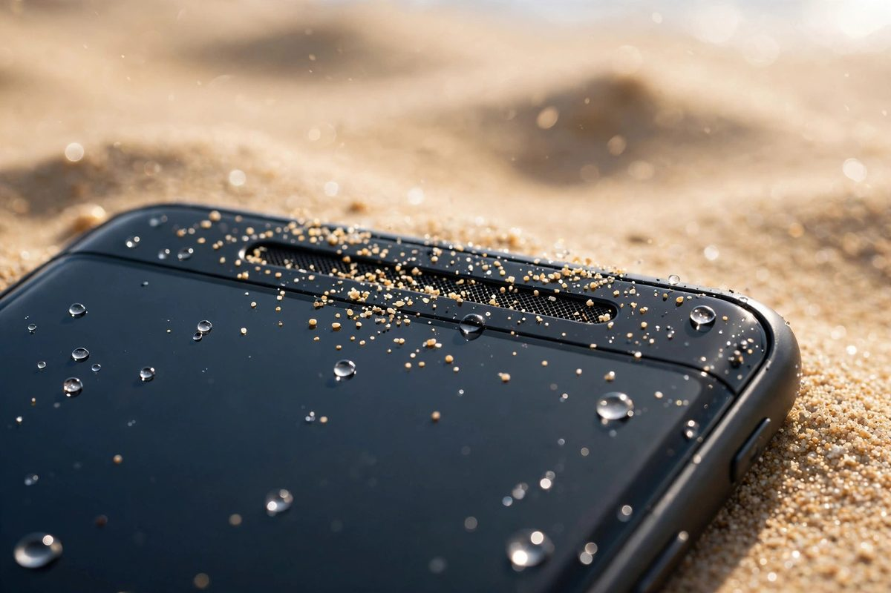

Cleaning Your Phone Speaker After Rain or the Beach

Rain and beach trips are two of the most common ways a phone speaker gets into trouble. Rain can push water into the speaker grille, leaving sound muffled and distant. Sand is worse in some ways: it is made of tiny, hard grains that wedge into the grille holes, and salt water leaves behind corrosive residue when it dries. The right response in the first few minutes matters a great deal, and so does knowing what not to do.
What to Do Immediately After Rain
If your phone gets caught in the rain, the first step is to dry the outside. Wipe the phone down with a clean, dry, lint-free cloth, paying attention to the speaker grille, the charging port, and the earpiece. Then hold the phone with the speaker facing down and tap it gently against your palm a few times. Gravity and light tapping will move a surprising amount of water out of the grille on their own.
Next, leave the phone in a dry, well-ventilated place with the speaker facing down for at least thirty minutes. Do not put it in a sealed bag or pocket while it is still wet, because trapped moisture slows drying. Do not use a hair dryer, since hot air can damage the battery, the screen adhesive, and the speaker itself. Room-temperature air and patience are the safest drying tools you have.
Once the outside looks dry, you can run a sound sweep to help eject any water still sitting in the speaker chamber. Our speaker cleaner plays a controlled frequency sweep that vibrates the speaker cone and helps push droplets out through the grille. Place the phone speaker side down on a dry cloth, turn the volume to maximum, and run the sweep for thirty to sixty seconds. Repeat it two or three times, wiping away any water that appears on the cloth between runs.
Dealing with Sand from the Beach
Sand needs a different approach, because it is solid, not liquid. Do not try to wash sand out of the speaker with water: wet sand turns into a paste that packs tightly into the grille and is far harder to remove. Start dry. Hold the phone speaker side down and brush the grille gently with a soft, dry brush, using short strokes that sweep grains away from the holes. Tap the phone lightly against your palm between brushing passes to shake grains loose.
For grains stuck in the holes, a small piece of painter's tape pressed lightly over the grille and peeled away can lift them out. Do not press the tape hard, and do not use strong adhesive tapes. Avoid compressed air at first with sand, because a blast can drive grains deeper into the speaker chamber. Once brushing and tape have removed everything visible, a few short, gentle bursts of compressed air from a distance can clear the remaining fine dust.
If the phone also got splashed with sea water, deal with the sand first while everything is dry, then dry the phone as described above and run the sound sweep. Salt water is corrosive, so if the phone was submerged in the sea or heavily splashed, a professional cleaning is worth considering even if the speaker seems to recover, because salt residue can cause corrosion inside the phone over the following days and weeks.
Mistakes That Make Things Worse
Several popular home remedies do more harm than good. Putting a wet phone in a bag of rice is the best-known example: rice dust can enter the speaker grille and charging port, and rice absorbs moisture far too slowly to help in any meaningful way. Shaking the phone violently can spread water to parts of the phone that were still dry. Blowing hard into the speaker with your mouth pushes warm, moist air inside, which adds humidity instead of removing it.
Another common mistake is to keep using the phone normally and hope the sound fixes itself. Light rain exposure often does clear up on its own as the water evaporates, but if the sound is still muffled after several hours of drying, do not keep playing loud music through the speaker. A wet speaker cone is more vulnerable to damage, and running it at full volume for a long time while it is still damp can stress the component. Use short cleaning sweeps instead, and test the sound with a sound test at moderate volume.
How to Tell If the Speaker Has Recovered
After drying and cleaning, play a familiar song and a voice recording at normal volume. The sound should be clear, with voices easy to understand and music sounding full rather than thin or distant. Compare the left and right channels if your phone has stereo speakers, and use our volume test to check that the speaker responds evenly at different levels. If the sound is still muffled, crackling, or much quieter than before after a full day of drying, the water may have reached the internal components, and that is a repair shop job.
Sound-based cleaning can help dislodge dust and water, but it cannot fix hardware damage, blown speakers, or water-damaged components. Be honest with yourself about the result: if several cleaning attempts and a full day of drying have not restored the sound, the speaker or the audio circuitry is likely damaged, and further home attempts will not change that.
Frequently Asked Questions
My phone got rained on and the speaker sounds muffled. Will it fix itself?
Often yes, if the exposure was light. Water trapped in the speaker grille usually evaporates within a few hours, and a sound sweep can speed that up. If it is still muffled after a full day, the water may have gone deeper, and a repair shop should check it.
Is it safe to use a speaker cleaning sound after my phone gets wet?
For light exposure such as rain, yes, after you have dried the outside of the phone. The sweep helps eject water from the speaker chamber. If the phone was submerged, do not play sounds through it: power it off and get professional help instead.
How do I get sand out of the speaker grille?
Work dry: brush gently with a soft brush while holding the phone speaker side down, tap it against your palm, and use painter's tape to lift stubborn grains. Never wash sand out with water, and do not poke grains out with pins or toothpicks. See our guide on safe ways to clean a phone speaker for the full routine.